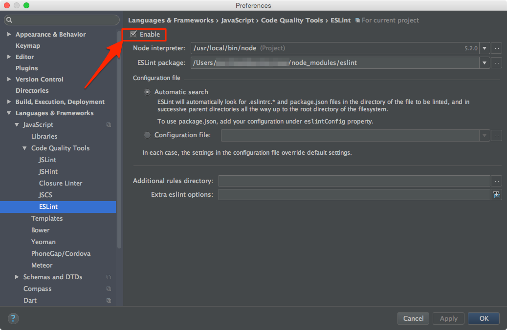

In package.json
npm start?In development Webpack compiles your application runs it in-memory. Only when
you run npm run build will it write to disk and preserve your bundled
application across computer restarts.
Error: listen EADDRINUSE 127.0.0.1:3000?This simply means that there's another process already listening on port 3000.
The fix is to kill the process and rerun npm start.
Find the process id (PID):
ps aux | grep node
This will return the PID as the value following your username:
janedoe 29811 49.1 2.1 3394936 356956 s004 S+ 4:45pm 2:40.07 node server
Then run
kill -9 YOUR_PID
e.g. given the output from the example above,
YOUR_PIDis29811, hence that would mean you would runkill -9 29811
Find the process id (PID):
netstat -a -o -n
This will return a list of running processes and the ports they're listening on:
Proto Local Address Foreign Address State PID TCP 0.0.0.0:25 0.0.0.0:0 Listening 4196 ... TCP 0.0.0.0:3000 0.0.0.0:0 Listening 28344
Then run
taskkill /F /PID YOUR_PID
e.g. given the output from the example above,
YOUR_PIDis28344, hence that would mean you would runtaskkill /F /PID 28344
In development mode CSS sourcemaps require that styling is loaded by blob://, resulting in browsers resolving font files relative to the main document.
A way to use local webfonts in development mode is to add an absolute output.publicPath in webpack.dev.babel.js, with protocol.
// webpack.dev.babel.js
output: {
publicPath: 'http://127.0.0.1:3000/',
/* … */
},
Note: Container will always be nested somewhere below a route. Even if there's dozens of components in between, somewhere up the tree will be route. (maybe only "/", but still a route)
While you can include the reducer statically in reducers.js, we don't recommend this as you lose
the benefits of code splitting. Instead, add it as a composed reducer. This means that you
pass actions onward to a second reducer from a lower-level route reducer like so:
// Main route reducer
function myReducerOfRoute(state, action) {
switch (action.type) {
case SOME_OTHER_ACTION:
return someOtherReducer(state, action);
}
}
That way, you still get the code splitting at route level, but avoid having a static combineReducers
call that includes all of them by default.
See this and the following lesson of the egghead.io Redux course for more information about reducer composition!
Since a container will always be within a route, one we can simply add it to the exported array in
sagas.js of the route container somewhere up the tree:
// /containers/SomeContainer/sagas.js
import { someOtherSagaFromNestedContainer } from './containers/SomeNestedContainer/sagas';
function* someSaga() { /* … */ }
export default [
someSaga,
someOtherSagaFromNestedContainer,
];
Or, if you have multiple sagas in the nested container:
// /containers/SomeContainer/sagas.js
import nestedContainerSagas from './containers/SomeNestedContainer/sagas';
function* someSaga() { /* … */ }
export default [
someSaga,
...nestedContainerSagas,
];
WebStorm is a powerful IDE, and why not also use it as debugger tool? Here is the steps
source-map (This line)npm run start)JavaScript Debug* Map your `root` directory with `webpack://.` (please note the last dot)
* Map your `build` directory with your root path (e.g. `http://localhost:3000`)
. (dot) in webpack://.ESLint help making all developer follow the same coding format. Please also setting up in your IDE, otherwise, you will fail ESLint test.
ESLintEnable